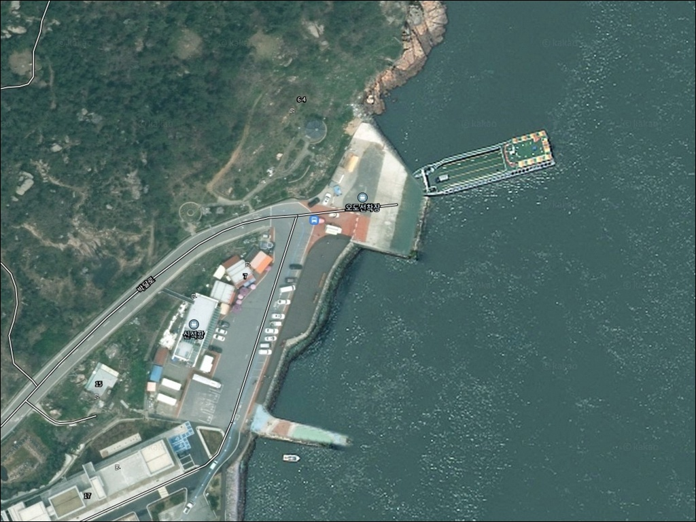
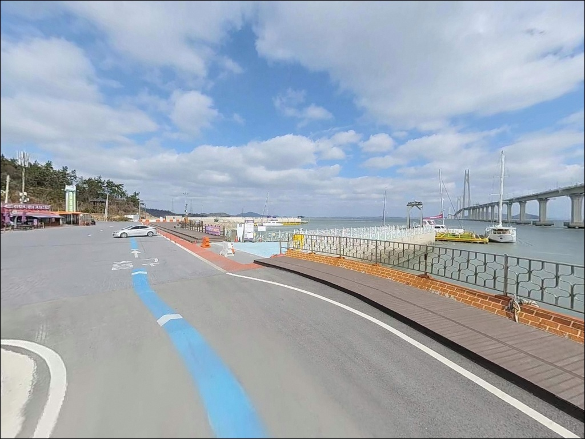
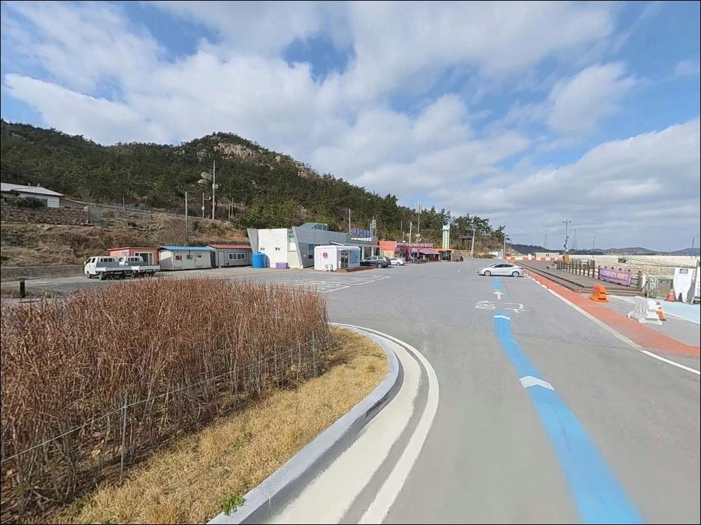
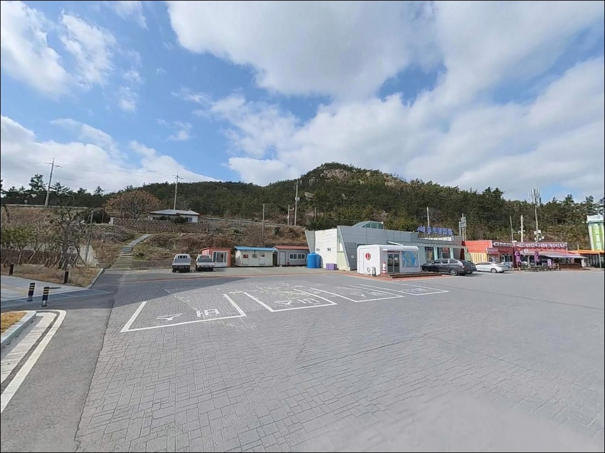
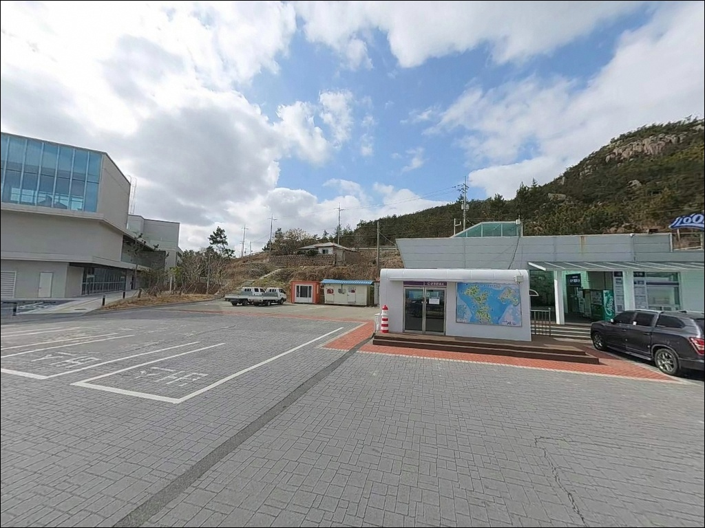
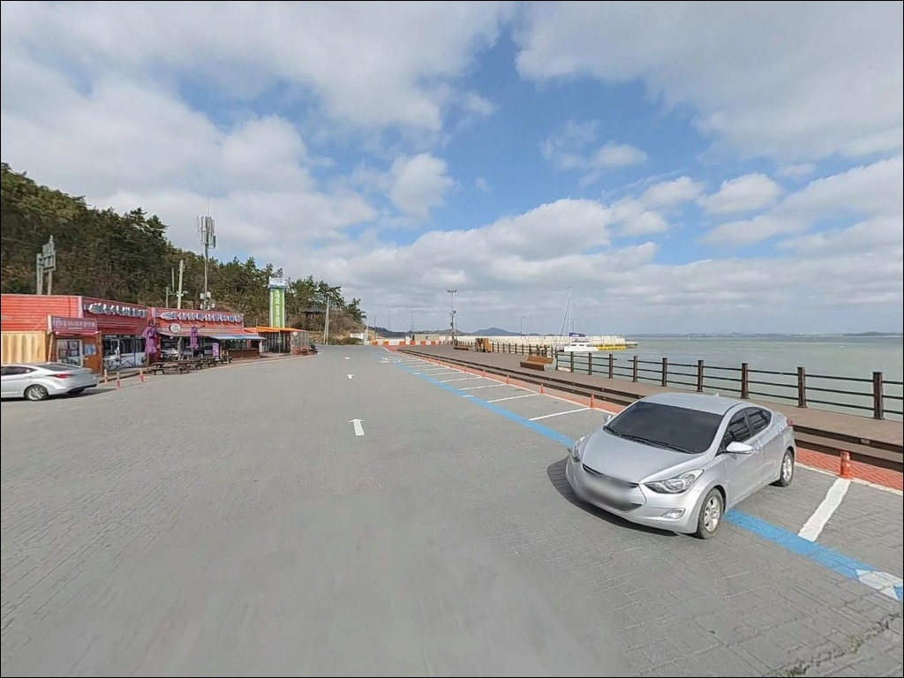
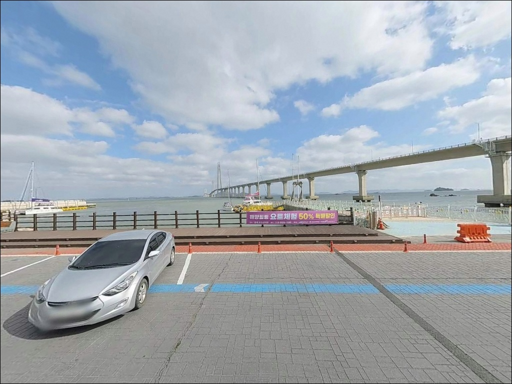
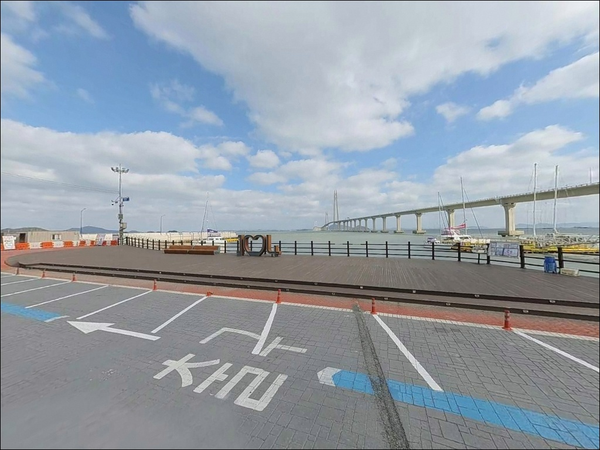
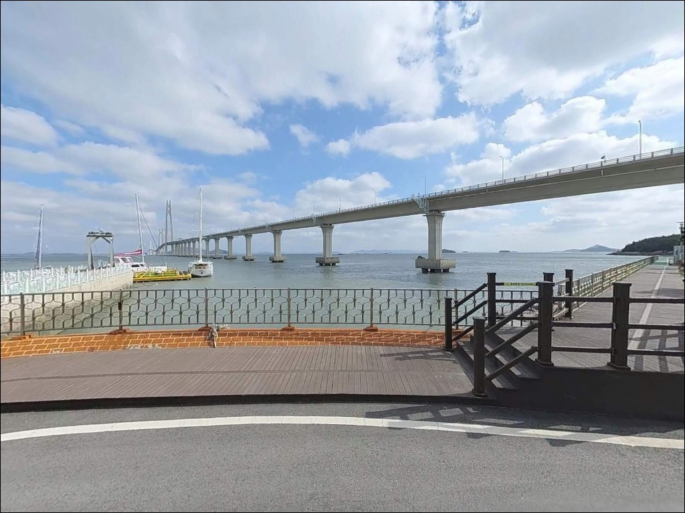

신석항, 오도선착장, 전남 신안군 자연 그대로의 분위기에서 차박, 낚시를 즐기기 좋은 포인트
이 페이지에는 광고(제휴 링크 포함)가 있으며, 광고 링크를 통해 구매하면 운영자가 판매 수익 또는 수수료를 받을 수 있습니다. 포인트 사진: 카카오맵 스카이뷰·로드뷰. 이 페이지의 지도·사진 이미지는 카카오맵의 실제 서비스 이미지와 다를 수 있습니다.


포인트 안내
신석항
전남 신안군 암태면 신석리 1-11
신석항에 대한 낚시 자료를 검색해도
조황 기록이 거의 나오지 않습니다.
그렇다고 물때 계산 없이 방문하면
서해 조류 특성상 사리 전후에
외항 쪽 채비 컨트롤이
현실적으로 불가능한 수준까지 유속이 강해집니다.
신석항은 천사대교 암태도 측 교두에
자리한 소규모 어항입니다.
전남 신안군 암태면 신석리는
압해도와 암태도를 잇는 이 다리의
교두 마을로, 섬 어민들의
생활 어항으로 기능해온 작은 선착장입니다.
이 글은 신석항의
진입 환경, 지형 구조, 낚시 방식 적합성에
집중합니다.
조황 단정이나 특정 시설 운영 여부는
이 글의 범위에 포함되지 않습니다.

1. 진입 동선과 포인트 접근성
천사대교 개통으로 압해읍 송공리 방면에서
국도를 타고 신석리까지
차량 진입이 가능합니다.
암태도 진입 직후 신석리에 해당하는 위치이므로
접근 경로 자체는 단순한 구조입니다.
다만 항구 내부로 내려가는 지선 도로는
어촌형 마을 도로 특성상
폭이 좁은 구간이 포함되어 있습니다.
대형 SUV나 캠핑 장비를 실은 차량이라면
출발 전 위성지도로 진입로와
회차 가능 여부까지 함께 확인하는 것이
안전합니다.
주차는 방파제 시작부 공터나
선착장 주변 평탄한 구역을
활용하는 방식이 일반적입니다.
소규모 어항 구조상 어선 접안과
하적 동선이 겹치는 자리는 피해야 하며,
어민 작업 공간을 방해하지 않는 범위에서
자리를 잡는 것이 기본 매너입니다.

2. 차박 환경과 야간 체류 여건
신석리는 소규모 어촌 마을로
민가가 항구 가까이 분포한 구조입니다.
야간 차량 통행은 많지 않지만
민가와의 거리가 가까운 편이라
완전한 프라이버시 확보는 어려운 환경입니다.
가로등 수가 많지 않아
야간 낚시 시 개인 조명 장비는 필수입니다.
천사대교 교량 조명이 어느 정도
주변을 밝혀주지만,
낚시 자리와의 거리에 따라
실효성은 달라집니다.
차박을 메인 목적으로 삼기에는
주차 가능 공간이 협소한 구조입니다.
낚시 후 간단히 하룻밤 머무는 용도라면
공간 확보 여부를 현장에서 먼저 확인한 뒤
판단하는 것이 현실적인 접근입니다.


3. 주변 편의시설 및 인프라 현황
신석항 반경 3km 이내에는
편의점이나 식당을 기대하기 어렵습니다.
소규모 어촌 마을 특성상
완전 자급 체제로 진입하는 것이
현실적인 준비 방식입니다.
식수, 얼음, 낚시 소품, 연료 모두
출발 전에 갖춰야 합니다.
암태면 소재지 방향으로 이동하면
편의점과 간단한 생활 인프라를
이용할 수 있습니다.
오도선착장 인근까지 이동할 경우
관광 안내소와 주차 공간이 갖춰져 있어
기본 거점으로 활용하기 좋은 구조입니다.

4. 방문 전 반드시 챙겨야 할 준비사항
신석항 방문 전 가장 먼저 확인할 것은
물때입니다.
서해 조류 특성상 사리 전후에는
유속이 급격히 강해져
외항 쪽 채비 컨트롤이 어려워집니다.
바다타임에서 암태면 기준 물때를 확인하고
조금 전후 또는 만조 전후 타이밍을
기준으로 출발 시각을 잡는 것이
기본 전략입니다.
서해 섬 지역 특성상 기상 변화가 빠릅니다.
출조 당일 아침 기상청 예보를
다시 한번 확인하는 습관이
헛걸음을 막는 가장 단순한 방법입니다.
암태도 해안은 바람 영향을 받는 구간이 있어
풍향·풍속 확인도 함께 챙겨야 합니다.
편의시설이 없는 환경이므로
식수, 간식, 연료, 비상약품은
출발 전 완비해야 합니다.
방파제 낚시 시 구명조끼 착용은
기본 안전 수칙이며,
야간에는 헤드랜턴을 반드시 지참합니다.

5. 지형 기반 낚시 여건 분석
신석항의 핵심 지형 특징은
천사대교 암태도 교두 위치에 있다는 점입니다.
대교 교각 구간이 앞바다를 지나는 구조로,
교각 주변에서 조류 흐름에
변화가 생기는 구간이 형성됩니다.
이 흐름이 방파제 외항 쪽에서
회유성 어종의 이동 통로 역할을 합니다.
암태도는 지명 자체가 바위가 많은 지형에서
유래했을 만큼 해안선에 석질 구간이 발달해 있습니다.
신석항 방파제 외항 측 끝단으로 갈수록
수심이 깊어지는 구조이며,
내항 쪽은 뻘 지형이 섞여 있어
간조 시 바닥 일부가 드러나는 구간이
있습니다.
만조 전후 타이밍에 수심이 확보되는
내항 주변을 노리는 것이 효율적입니다.
신안 해역 전반은 대륙붕 지대로
평균 수심이 깊지 않은 해역에 속합니다.
사리 전후 유속이 강해지는 서해형 조류 특성을
고려하면, 만조 전후와 정조 타이밍을
먼저 계산하고 자리를 잡는 것이
이 포인트 공략의 핵심입니다.
출조 전에 신석항 일대 최신 조황을
꼭 검색해 보시기 바랍니다.


6. 조류 타이밍에 따라 조과가 달라지는 낚시 스타일
원투낚시는 이 포인트에서
가장 기본적인 접근 방식입니다.
내항 주변 뻘과 모래 혼합 저질 구간은
만조 전후 들물 타이밍에
채비를 멀리 보내 바닥을 탐색하는 방식이
바닥 어종 공략에 적합한 구조입니다.
루어낚시는 방파제 석축 주변과
외항 쪽 조류가 살아나는 구간을
중심으로 공략하는 방식이 어울립니다.
신안 해역에서 기대해 볼 수 있는
우럭·볼락은 방파제 구조물 주변
석질 지형을 선호하는 어종이며,
야간 소형 지그헤드 채비로
끝단 주변을 천천히 탐색하는 방식이 유효합니다.
찌낚시는 외항 쪽이 조류를 직접 받는 구조라면
릴찌 방식으로 감성돔을
기대해 볼 수 있는 자리입니다.
내항 뻘 지형 구간은 조류가 약하고
간조 시 수심이 얕아지므로,
물때 타이밍과 자리 선택을
함께 판단해야 합니다.

7. 대안 포인트와 플랜 B 동선
신석항에서 여건이 여의치 않거나
낚시 자리가 부족한 경우,
같은 암태면 해안선의
오도선착장이 첫 번째 대안입니다.
1004섬 요트투어의 출발지로
공식 소개된 곳으로,
규모가 신석항보다 크고
주변 낚시 공간도 함께 탐색할 수 있습니다.
암태도 내에서 더 안정적인 접안 시설을
원한다면 남강항(암태남강선착장)이
대안으로 고려할 수 있습니다.
여객선·버스 복합환승구역으로 공식 확인된 곳으로
접안 시설 규모가 더 큰 구조입니다.
신석항을 처음 찾는다면
오도선착장 또는 남강항을 기점으로 잡고
신석항을 병행 탐색하는 동선이 효율적입니다.
더 알려진 방파제 포인트를 원한다면
팔금도·안좌도 방향을 탐색하는 것도
고려할 수 있습니다.
암태도와 교량으로 연결되어 있어
이동 동선에 무리가 없으며,
이 일대 방파제 권역은
낚시 성립 조건을 갖춘 해역입니다.

아직 덜 알려진 포인트라도
지형 조건은 갖춰져 있습니다
조황 기록이 없는 포인트를
먼저 답사하는 것을 즐기는 낚시인이라면
신석항의 지형 조건은
충분히 시도해볼 만한 구조입니다.
천사대교 교두의 조류 변화 구간과
석질 해안선, 방파제 외항 쪽의 수심 구조는
원투·루어·찌낚시를 복수로 운용할 수 있는
기본 조건을 갖추고 있습니다.
반면 편의시설이 전무한 환경이므로
준비 없이 찾아가거나
물때 계산 없이 사리 전후에 도착하면
낚시 자체가 어려운 상황을
맞닥뜨릴 수 있습니다.
물때 확인, 완전 자급 준비, 진입로 사전 확인,
이 세 가지를 갖추고 간다면
기억에 남는 답사 포인트가 될 수 있는 곳입니다.
차박을 함께 계획한다면
오도선착장을 거점 삼아
신석항을 병행 탐색하는 동선이
공간 확보와 편의성 모두에서
현실적인 선택입니다.